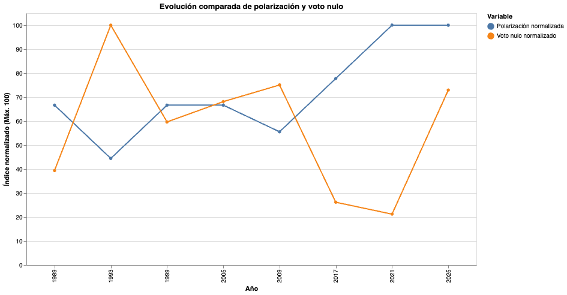

Una transición cuidadosa
Nadie quería otra crisis. Nadie quería volver a 1973. La política chilena de esos años operaba como un acuerdo tácito entre adultos cansados: no empujen demasiado, no griten demasiado, no ganen demasiado.
Una elección casi aburrida
Cuatro años después la cosa fue casi aburrida. Eduardo Frei Ruiz-Tagle arrasó con el 58% en primera vuelta —ni siquiera hubo segunda— y Arturo Alessandri perdió sin drama.
Algo empezó a moverse
Pero en 1999 algo empezó a moverse.
Ricardo Lagos era un hombre que sonaba a peligro para la mitad del país; había señalado a Pinochet en televisión, en vivo, con el dedo, y eso era un gesto que en el Chile de los noventa todavía costaba caro.
La derecha lo llamó comunista con la misma ligereza con que llama comunista a todo lo que no le gusta. Lagos era socialista, en el sentido europeo del término, lo que en Chile equivalía a decir algo entre amenazante y exótico.
Su rival, Joaquín Lavín, hizo campaña como si la política no existiera. Lagos ganó por menos de tres puntos en segunda vuelta.
Una década extraña
Lo que siguió fue una década extraña.
Bachelet y Piñera se alternaron el poder con elegancia. Bachelet en 2006 versus Piñera: tres. Piñera en 2010 versus Frei hijo: dos y medio, el piso histórico del período.
Esa segunda vuelta fue la menos polarizada de todas: un demócrata cristiano moderadísimo contra un empresario de centroderecha. Los dos habrían podido tomar un café sin que nadie se molestara demasiado.
Chile era un país funcional y aburrido.
El mapa cambió
Y entonces llegó 2017 y el mapa cambió para siempre.
En primera vuelta apareció, casi como una rareza, un diputado independiente de apellido Kast que obtuvo el 8% con un discurso que no se parecía a ningún otro de la derecha chilena: hablaba de valores, de patria.
Al otro lado del espectro, Beatriz Sánchez llevó al Frente Amplio a un 20% que nadie había calculado.
Pero la segunda vuelta fue entre Piñera y Guillier, dos moderados, y el número bajó a tres. La banda se relajó.
Chile eligió no elegirse
El 21 de noviembre de 2021 Chile fue a votar y eligió no elegirse.
Gabriel Boric y José Antonio Kast pasaron a segunda vuelta. Un hombre de treinta y cinco años que venía del movimiento estudiantil contra otro que venía de algún lugar más difícil de nombrar.
Era la primera vez en democracia que los dos polos más alejados del espectro político chileno llegaban juntos, pero en contra. El país se dividió en dos.
Los extremos se encuentran
No duró.
En 2025 la historia se repitió, pero esta vez el polo izquierdo era todavía más definidamente comunista, y Kast seguía ahí, como si el país no pudiera sacárselo de encima.
Cuatro y medio otra vez, el mismo promedio, pero los extremos más extremos. El puntaje empata con 2021 solo porque la aritmética promedia: la segunda vuelta fue un cinco sin matices.

Fuente de los datos
Los datos electorales utilizados en esta pieza fueron obtenidos a partir de información oficial del Servicio Electoral de Chile.
- Datos de elecciones presidenciales de Chile.
- Resultados de primera y segunda vuelta.
- Información sobre candidaturas y porcentajes de votación.